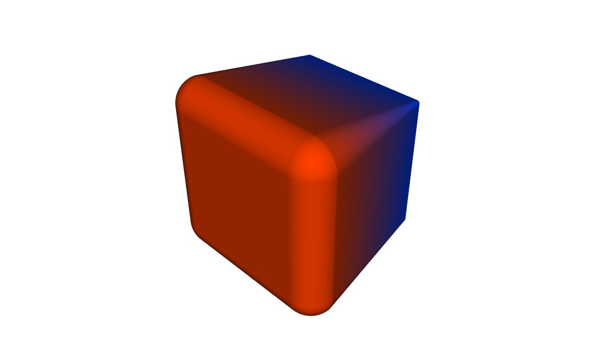
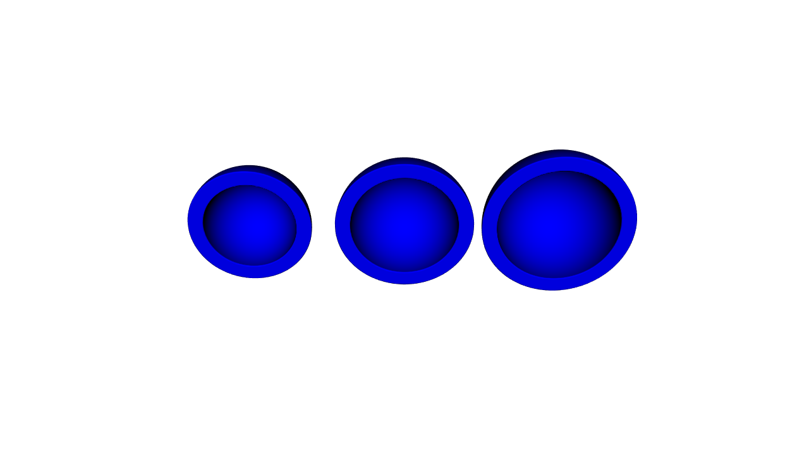
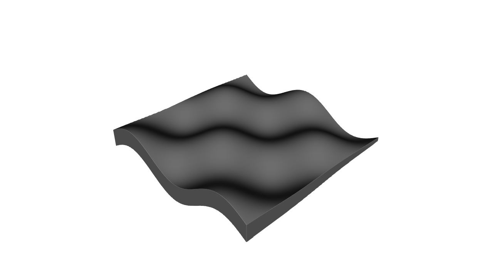
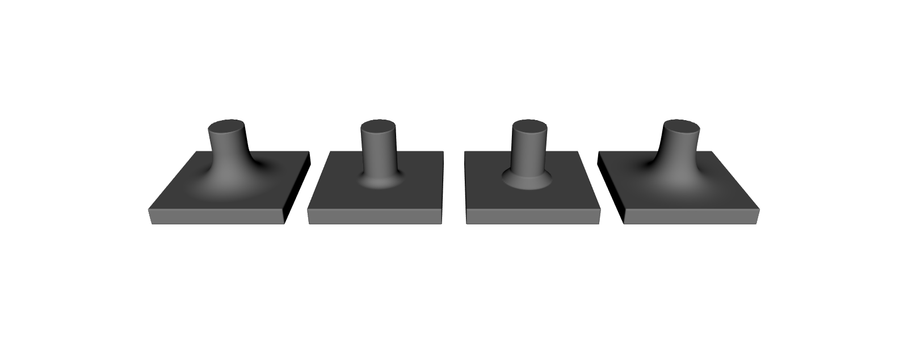
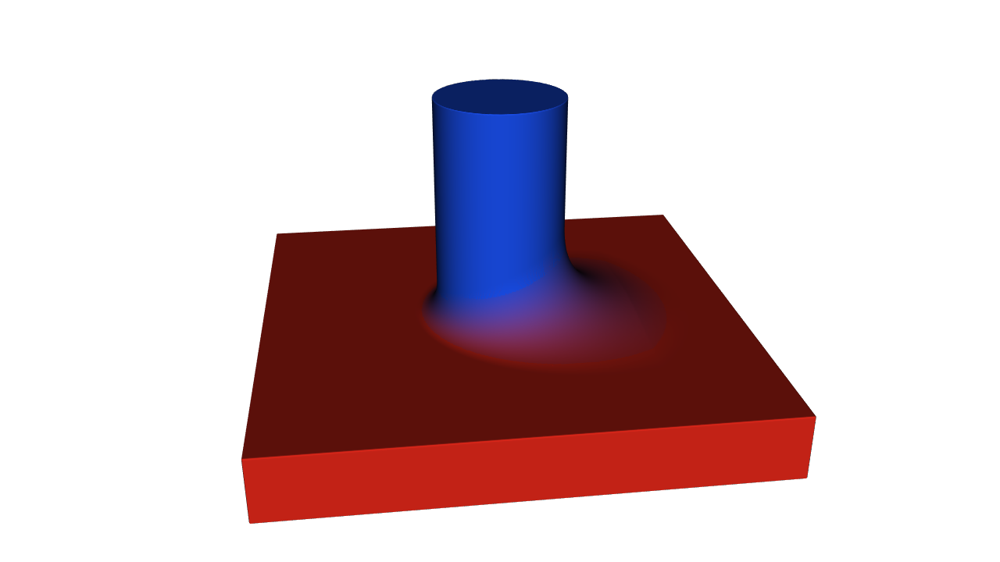
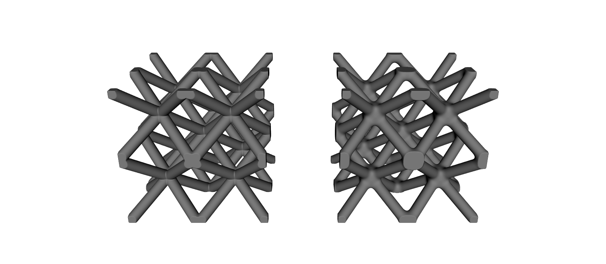
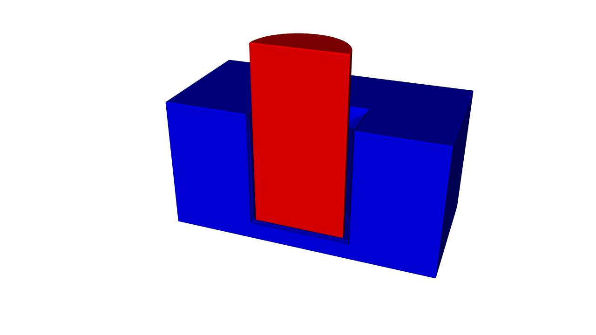
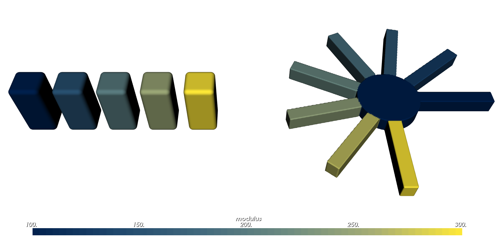

Offsets, Blends and Arrays#
This guide shows you how to reshape a part you already have. You will grow and shrink it, hollow it out, round the seams where parts meet, cut a hole that another part fits into, and repeat a part in a row or around a circle.
Many of these tools take a size, such as a wall thickness. That size can change across the part, just like the gradients you have already made.
What You Will Learn#
The lessons below show you how to:
Grow, shrink and hollow parts with offsets, shells and thickening.
Round the seams where parts meet, everywhere or only where you choose.
Cut a socket with room for a part to fit.
Repeat a part in a row or around an axis.
Prerequisites#
This guide assumes you have completed the Getting Started Guide, in particular Lesson 2 (CSG) and Lessons 4–6 (attributes), and the Functional Grading Guide, which shows how to write the expressions used below. To write a size as a Python function instead, see the Python functions for attributes guide.
Running the Examples#
The scripts for this guide are in examples/operations/. Run one to open the OpenVCAD render preview:
python examples/operations/01_field_offset.py
Each script ends with viz.Render(...), as in Getting Started. Your window may open at a different angle from the pictures in this guide.
Note: To see an attribute such as a colour, volume fractions or a modulus in colour, pick it from the Attribute list at the top of the render window (it is also under Render -> Attribute). Each lesson says which one to pick.
Parameters that vary through space#
Most tools in this guide take a size: an offset distance, a wall thickness, a blend radius or a gap. A plain number, such as 2.0, gives the same size everywhere.
You can also pass a field: a value that changes from point to point, like a gradient. A parameter that accepts a field is called field-valued. It accepts any of:
a number;
a
pv.FloatAttribute, such aspv.FloatAttribute("1 + 0.1 * x"), or anything built from one, such asfield.clamp(...)or2.0 * field + 1.0(a volume or a distance field works too);a plain Python function
f(x, y, z, d), which OpenVCAD compiles with numba for you, or anumba.cfuncwith the signaturefloat64(float64, float64, float64, float64);a
pv.ScalarParameter, which wraps any of the above with a few hints (below).
The field is read at each point’s x, y and z. For an offset, a shell or a thickened sheet, d is the signed distance to the part being changed (negative inside it).
When a size can change, OpenVCAD needs to know how big the part can get. You tell it with pv.ScalarParameter:
import pyvcad as pv
thickness = pv.FloatAttribute("1.8 + 0.08 * x").clamp(0.6, 3.0)
parameter = pv.ScalarParameter(thickness, minimum=0.6, maximum=3.0, lipschitz=0.08)
minimumandmaximumare the smallest and largest values the field takes. Offsets, outward and centred shells, thickening, blend radii and clearance gaps need them for a field. If you leave them out, you get a clear error..clamp(0.6, 3.0)keeps the field in that range, so theminimumandmaximumyou give are true everywhere.lipschitzis optional. It says how fast the field can change. You can ignore it for now; Advanced Notes at the end of this guide explains it.
Some fields already know their range, so they need no pv.ScalarParameter: a clamped or eased field, noise, and arithmetic on such fields. In the snippet above, thickness alone would work, because .clamp(0.6, 3.0) tells OpenVCAD its range. The Fields guide covers these fields.
Lesson 1: Offsets that vary#
An offset moves a part’s whole surface outward, making it bigger, or inward, making it smaller. pv.Offset(offset, child) offsets child, the part you are changing. A positive offset grows it and a negative one shrinks it.
The offset may be a field. Here a cube grows by 0.5 mm at its blue end (x = −10) and by 4 mm at its red end (x = +10):
import pyvcad as pv
import pyvcad_rendering as viz
# A cube whose colour grades from blue to red along x.
cube = pv.RectPrism(pv.Vec3(0, 0, 0), pv.Vec3(20, 20, 20))
cube.set_attribute(pv.DefaultAttributes.COLOR_RGBA,
pv.Vec4Attribute("0.5 + x / 20", "0.25", "0.5 - x / 20", "1"))
# The offset distance is a field: 0.5 mm at x = -10 rising to 4 mm at x = +10, clamped so the
# bounds hold everywhere. The bounds size the bounding box; the slope bound (3.5 mm over 20 mm)
# keeps the result a safe distance.
distance = pv.FloatAttribute("2.25 + 0.175 * x").clamp(0.5, 4.0)
parameter = pv.ScalarParameter(distance, minimum=0.5, maximum=4.0, lipschitz=0.175)
# GrowthPolicy.extend carries the cube's colour straight out into the grown material.
grown = pv.Offset(parameter, cube, growth=pv.GrowthPolicy.extend)
viz.Render(grown)
Pick color_rgba in the Attribute list to see the colours.
Render (color_rgba)

Growing a box rounds its edges, because the new surface stays the same distance from the old one. The red end grew more, so its edges are rounder.
What the grown material is made of#
Grown material was never part of the child, so what attributes should it have? The growth argument decides:
|
Grown material gets |
|---|---|
|
no attributes at all, which is how |
|
the attributes at the nearest point on the child’s surface, so they carry straight outward |
|
only the attributes you set on the operator itself |
Inside the child, its own attributes always apply. Here extend carries the cube’s colour gradient out into the new material.
Lesson 2: Shells inward, outward or centred#
A shell is a wall of even thickness that follows a part’s surface, like the skin of a hollow ball. pv.Shell(thickness, child) keeps that wall and leaves the rest empty. The wall lies inside the surface by default; direction can put it outside instead, or centre it on the surface.
This example puts the same 2 mm wall on three equal spheres and cuts the front away so you can see it:
import pyvcad as pv
import pyvcad_rendering as viz
materials = pv.default_materials
def ball(x):
sphere = pv.Sphere(pv.Vec3(x, 0, 0), 8.0)
sphere.set_attribute(pv.DefaultAttributes.VOLUME_FRACTIONS,
pv.VolumeFractionsAttribute([(1.0, materials.id("blue"))]))
return sphere
# The same 2 mm wall laid inside, across and outside each sphere's surface.
# Wall outside a sphere is grown material; GrowthPolicy.extend gives it the sphere's material.
inward = pv.Shell(2.0, ball(-20))
centered = pv.Shell(2.0, ball(0), direction=pv.Shell.Direction.centered, growth=pv.GrowthPolicy.extend)
outward = pv.Shell(2.0, ball(20), direction=pv.Shell.Direction.outward, growth=pv.GrowthPolicy.extend)
# Cut the front away to show the walls.
walls = pv.Union(0.0, [inward, centered, outward])
root = pv.Difference(walls, pv.RectPrism(pv.Vec3(0, -15, 0), pv.Vec3(70, 30, 30)))
viz.Render(root, materials)
Pick volume_fractions in the Attribute list.
Render (volume_fractions)

From left to right: inward, centred and outward. The spheres are the same size, so the outer surface grows by 0, 1 and 2 mm.
The thickness may be a field. An outward or centred shell with a field thickness needs
minimumandmaximum, because it makes the part bigger.Wall inside the child keeps the child’s attributes. Wall outside it is grown material and follows
growth, as in Lesson 1.Older scripts that write
pv.Shell(-1.0, child)(a negative thickness for an inward shell) still work.
Lesson 3: Thickening a sheet#
A sheet is a thin surface with no inside, so it is not yet a solid. pv.Thicken(thickness, child) turns it into a solid plate of the given total thickness, half on each side.
Here the sheet is a wave written as abs(z - wave). That value is zero on the wave and grows above and below it, but is never negative, so the sheet has no inside. The plate’s thickness grows from 0.6 mm to 3 mm along x.
import pyvcad as pv
import pyvcad_rendering as viz
# A wavy sheet given as an unsigned distance: |z - wave(x, y)|. It has no inside of its own.
sheet = pv.Function("abs(z - 2 * sin(x / 3) * cos(y / 3))", pv.Vec3(-15, -15, -6), pv.Vec3(15, 15, 6))
# Thicken turns the sheet into a plate whose thickness grows from 0.6 mm to 3 mm along x.
thickness = pv.FloatAttribute("1.8 + 0.08 * x").clamp(0.6, 3.0)
plate = pv.Thicken(pv.ScalarParameter(thickness, minimum=0.6, maximum=3.0, lipschitz=0.08), sheet)
# Trim the plate to a square so its edges are clean.
root = pv.Intersection(plate, pv.RectPrism(pv.Vec3(0, 0, 0), pv.Vec3(28, 28, 12)))
viz.Render(root)
Render

Thicken is a centred Shell under its own name, so the same rules for fields and attributes apply.
Lesson 4: Blending where parts meet#
Where two parts meet, the seam is a sharp edge. A blend smooths it. A rounded blend is called a fillet, and a flat, angled one a chamfer. Fillets also make parts stronger, because cracks tend to start in sharp inside corners.
pv.Union, pv.Intersection and pv.Difference take a blend_radius (the size of the blend; 0 is sharp) and a profile (its shape):
|
Shape |
How far it reaches along each face |
|---|---|---|
|
a smooth, rounded fillet; the original smooth union |
about 4 × radius |
|
a true circular arc of that radius where the faces meet at right angles |
radius |
|
a flat 45° bevel |
radius |
|
an extra-smooth fillet that flows gently into the faces |
about 6 × radius |
Quadratic and cubic blends reach much further along the faces, so the same radius gives them a much bigger fillet than a circular or chamfer blend. This example blends the same post-on-plate joint with each profile:
import pyvcad as pv
import pyvcad_rendering as viz
# The same joint, a post standing on a plate, blended with each profile in turn. The radius means the
# same dip for quadratic and cubic (their fillets reach about 4r and 6r along each face), and the
# true arc radius or bevel size for circular and chamfer.
profiles = [pv.BlendProfile.quadratic, pv.BlendProfile.circular, pv.BlendProfile.chamfer, pv.BlendProfile.cubic]
joints = []
for index, profile in enumerate(profiles):
x = (index - 1.5) * 26.0
plate = pv.RectPrism(pv.Vec3(x, 0, 0), pv.Vec3(22, 22, 3))
post = pv.Cylinder(pv.Vec3(x, 0, 6.5), 3.0, 10.0)
# A blend radius of 1.5 mm rounds (or bevels) the seam where the post meets the plate.
joints.append(pv.Union([plate, post], blend_radius=1.5, profile=profile))
root = pv.Union(joints)
viz.Render(root)
Render

From left to right: quadratic, circular, chamfer and cubic, all with a radius of 1.5 mm.
The list form
pv.Union([a, b, c], blend_radius=..., profile=...)takes any number of parts. The older forms,pv.Union(a, b)andpv.Union(k, [a, b, c]), still work and use the quadratic profile.The order of the parts does not change the result.
A blended intersection or difference only removes material, so it rounds the edges where the parts meet.
pv.Difference(a, b, blend_radius=..., profile=...)rounds or bevels the edge the cut leaves ona.
Lesson 5: Blending only where you want it#
The blend radius may be a field, so a seam can be sharp in one place and rounded in another. Where the radius is 0, the edge stays sharp.
The fillet lies outside both parts, so it is grown material. In a union it takes the attributes of the two nearest parts, mixed by how close the point is to each. A fillet between a red part and a blue part therefore shades from one colour to the other.
import pyvcad as pv
import pyvcad_rendering as viz
# A red plate and a blue post.
plate = pv.RectPrism(pv.Vec3(0, 0, 0), pv.Vec3(30, 30, 4))
plate.set_attribute(pv.DefaultAttributes.COLOR_RGBA, pv.Vec4Attribute(0.85, 0.15, 0.1, 1.0))
post = pv.Cylinder(pv.Vec3(0, 0, 9), 4.0, 14.0)
post.set_attribute(pv.DefaultAttributes.COLOR_RGBA, pv.Vec4Attribute(0.1, 0.3, 0.9, 1.0))
# The blend radius is a field: 0 (a sharp seam) on the -y side, rising to 2 mm on the +y side.
# Bounds size the bounding box; the slope bound keeps the result a safe distance.
radius = pv.FloatAttribute("1 + 0.12 * y").clamp(0.0, 2.0)
joint = pv.Union([plate, post], blend_radius=pv.ScalarParameter(radius, minimum=0.0, maximum=2.0, lipschitz=0.12))
# The fillet grows material outside both parts; its colour mixes red and blue by the blend weight.
viz.Render(joint)
Pick color_rgba in the Attribute list to see the colours.
Render (color_rgba)

The seam is almost sharp on the left (−y) and grows to a fillet of up to 2 mm on the right (+y), shading from the post’s blue to the plate’s red. The mixing follows the same rules as pv.Mix: numbers and colours blend smoothly, and volume fractions mix material by material.
Lesson 6: Filleting the nodes of a strut lattice#
A strut lattice is a 3D web of thin beams, called struts, built with the metamaterials package. The struts meet at nodes. The lattice builders take a member_blend_radius that fillets the struts into each other at the nodes, with the same blend as Lesson 4:
import pyvcad as pv
import pyvcad_metamaterials as mm
import pyvcad_rendering as viz
# Two copies of the same 2 x 2 x 2 BCC strut lattice side by side.
left_map = mm.rectangular_cell_map((pv.Vec3(-25, -10, -10), pv.Vec3(-5, 10, 10)), cells=(2, 2, 2))
right_map = mm.rectangular_cell_map((pv.Vec3(5, -10, -10), pv.Vec3(25, 10, 10)), cells=(2, 2, 2))
# Left: sharp nodes. Right: member_blend_radius fillets every node where struts meet. Struts that
# neighbouring cells share count once, so only the nodes thicken.
sharp = mm.bcc(left_map, beam_radius=0.8)
filleted = mm.bcc(right_map, beam_radius=0.8, member_blend_radius=0.25)
root = pv.Union(sharp, filleted)
viz.Render(root)
Render

Left: sharp nodes. Right: filleted nodes. Only the nodes thicken. A strut that two neighbouring cells share is counted once, so it keeps its radius instead of swelling, and a strut that bends to follow a curved cell map is not blended with itself.
Every named builder (mm.cubic, mm.bcc, mm.octet, …) and mm.graph_lattice accept member_blend_radius, and it may be a field. Keep it small compared with the strut radius, because the default quadratic blend reaches about four times as far. The stochastic lattices have long had the same argument under the same name.
Lesson 7: Cutting with a clearance#
A clearance is a small gap left around a part so that it fits into a hole without jamming. pv.Difference.clearance(body, part, gap) cuts part out of body and leaves a gap of gap all round it. It is the same as pv.Difference(body, pv.Offset(gap, part)) in one call, and it takes a blend_radius and profile to round or bevel the rim:
import pyvcad as pv
import pyvcad_rendering as viz
materials = pv.default_materials
def coloured(node, colour):
node.set_attribute(pv.DefaultAttributes.VOLUME_FRACTIONS,
pv.VolumeFractionsAttribute([(1.0, materials.id(colour))]))
return node
# A peg and the block it slides into.
peg = coloured(pv.Cylinder(pv.Vec3(0, 0, 4), 4.0, 16.0), "red")
block = coloured(pv.RectPrism(pv.Vec3(0, 0, 0), pv.Vec3(24, 24, 12)), "blue")
# Cut the block around the peg, leaving 1 mm of clearance all round, with a small chamfer on the
# hole's rim. The gap could also be a field, for example looser at the top than at the bottom.
socket = pv.Difference.clearance(block, peg, 1.0, blend_radius=1.5, profile=pv.BlendProfile.chamfer)
# Show the socket cut in half, with the peg seated in it.
half = pv.Difference(socket, pv.RectPrism(pv.Vec3(0, -15, 0), pv.Vec3(40, 30, 40)))
root = pv.Union(half, pv.Difference(peg, pv.RectPrism(pv.Vec3(0, -15, 0), pv.Vec3(40, 30, 40))))
viz.Render(root, materials)
Pick volume_fractions in the Attribute list.
Render (volume_fractions)

The block is cut in half to show the 1 mm gap and the chamfered rim. The gap may be a field (with minimum and maximum), for example a tighter fit at the bottom of a hole than at the top. The block keeps its own attributes.
Lesson 8: Arrays#
An array is a set of copies of one part, laid out in a pattern. pv.Tile repeats a part on a grid of boxes, called cells; give it a count for a fixed number of copies. pv.PolarArray repeats a part around an axis, over the full circle or an arc. Each copy can also have its own material:
import pyvcad as pv
import pyvcad_rendering as viz
# A finite linear array: five copies of a rounded peg along x, cells of 8 mm.
peg = pv.Offset(0.8, pv.RectPrism(pv.Vec3(0, 0, 0), pv.Vec3(4, 4, 10)))
row = pv.Tile(8.0, 8.0, 14.0, peg, count=(5, 1, 1))
# The copy index is a field: here each copy gets a stiffer modulus than the one before.
row.set_attribute(pv.DefaultAttributes.MODULUS, 100.0 + 50.0 * row.instance_index_field(0))
# A polar array: eight fan blades around the z axis, spread over a 270 degree arc, on a hub.
blade = pv.RectPrism(pv.Vec3(13, 0, 7), pv.Vec3(14, 2.5, 3))
fan = pv.PolarArray(8, blade, angle_range=(0.0, 270.0))
fan.set_attribute(pv.DefaultAttributes.MODULUS, 100.0 + 200.0 / 7.0 * fan.instance_index_field())
hub = pv.Cylinder(pv.Vec3(0, 0, 7), 6.0, 3.0)
hub.set_attribute(pv.DefaultAttributes.MODULUS, pv.FloatAttribute(100.0))
# Place the fan beside the row.
root = pv.Union(row, pv.Translate(72.0, 4.0, 0.0, pv.Union(fan, hub)))
viz.Render(root)
Pick modulus in the Attribute list to see each copy’s stiffness.
Render (modulus)

Tile cells are
cell_x × cell_y × cell_z. The first cell starts at the origin, and the part’s origin sits at the centre of each cell, so the pegs here are centred at x = 4, 12, 20, 28 and 36.count=(5, 1, 1)keeps copies 0 to 4 along x. A count of 0 leaves that axis endless, which is the original tiling.PolarArray keeps the part as copy 0 and adds copies every 360 / N degrees around
axis, throughcenter(by default the z axis through the origin). Withangle_range=(start, end)it spreads them evenly instead, from the first atstartto the last atend.Copies that touch or overlap are joined correctly.
instance_index_field()gives the copy number as a field: 0, 1, 2 and so on. Set an attribute built from it on the array node to vary material from copy to copy. Here100.0 + 50.0 * row.instance_index_field(0)gives the pegs a modulus of 100, 150, 200, 250 and 300. ForTile,instance_index_field(0)counts along x (1 for y, 2 for z), andinstance_index_field()gives the running number of a finite array.
Advanced Notes#
These notes matter when you stack these tools, for example when you offset a part that is already blended.
The lipschitz hint#
Offsets, shells and blends read the signed distance of the parts they change, and the next tool reads theirs. With a field size, the surface is always in the right place, but the distances away from it can be a little off.
The lipschitz hint is the most the field can change per millimetre you move. With it, OpenVCAD scales its distances down so they are never too large near the part, which keeps them well behaved when you offset or blend again. For a field that changes in a straight line along one axis, the hint is the size of the number in front of that coordinate: 0.175 in Lesson 1, where the offset rises 3.5 mm over 20 mm. Clamping never makes a field change faster, and a larger hint is always safe, just more cautious. A field size still reports approximate accuracy (below): just outside the part’s bounding box the scaled distances can fall below the distance to the box, which a bound does not allow.
Distance accuracy#
Every node reports how faithful its distance is with distance_accuracy(), after prepare(). The answer covers the whole part below the node, so a tool is never more accurate than its least accurate input, and lipschitz_bound() gives the factor that goes with a bound:
Value |
Meaning |
|---|---|
|
the true signed distance ( |
|
within the bandwidth, never more than |
|
right at the surface, but may be too large or too small away from it ( |
Constant offsets, shells and thicken keep their input’s accuracy as a bound. Sharp Booleans are bounds, and so are blended Booleans with a constant quadratic or cubic radius. Circular and chamfer blends, and any field size (with or without a lipschitz hint), are approximations. A Tile or PolarArray keeps its input’s accuracy when it can see every copy that could be nearest; distance_accuracy() reports approximate when it cannot.
The surface is right either way. Accuracy matters when you offset or blend the result again, and the printer compilers use it to skip voxels that provably hold no material: for an approximate part they sample every voxel, which gives the same output more slowly.
pv.as_float_attribute(value) turns any field-valued input into a FloatAttribute, if you want to build a field once and reuse it. For the full details, see the Python API pages for attributes (pv.ScalarParameter, pv.GrowthPolicy, pv.DistanceAccuracy) and composition nodes.
Where to go next#
The Python API pages for composition nodes and attributes list every argument.
The metamaterials guides cover the lattice builders used in Lesson 6.